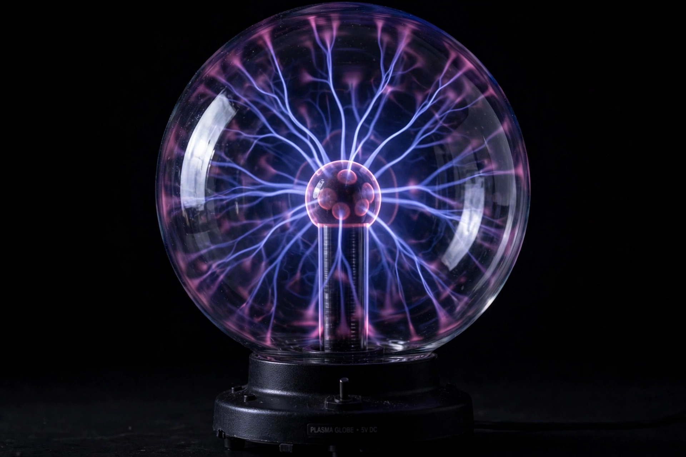

Plasma (physics)

[Image: Photograph of a glowing plasma globe with branching electric filaments]In physics, plasma is one of the four fundamental states of matter (with solid, liquid and gas), consisting of a hot, electrically conducting mixture of ions and free electrons whose collective behaviour is dominated by electromagnetic forces. Irving Langmuir named it in 1928 (after blood plasma, for its life-like responsiveness).
Plasma is by far the most common state of ordinary matter in the universe: stars, the solar wind, the interstellar and intergalactic media, lightning, aurorae and nebulae are plasma. Its physics (magnetohydrodynamics and kinetic theory) underlies fusion energy research — confining 100-million-degree plasma in tokamaks and stellarators, or compressing it inertially — space weather, plasma processing in semiconductor manufacture, and much of astrophysics, including the quark–gluon plasma recreated in heavy-ion colliders, sometimes called a fifth state by analogy.
Collective behaviour
Because its particles are charged and interact at long range, a plasma behaves collectively: it screens electric fields over the Debye length, supports a zoo of waves and instabilities, and freezes magnetic fields into its flow (Alfvén's theorem) — the behaviour that both powers astrophysical jets and bedevils fusion confinement, where instabilities leak energy from the burning core.